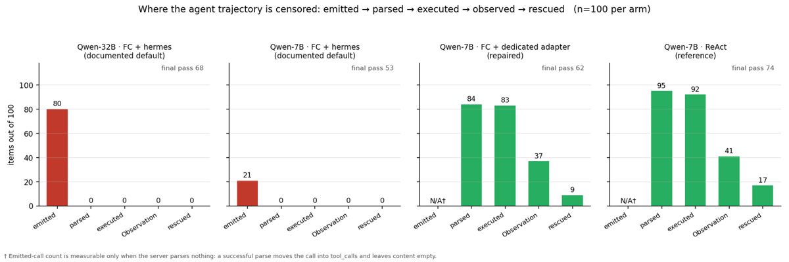
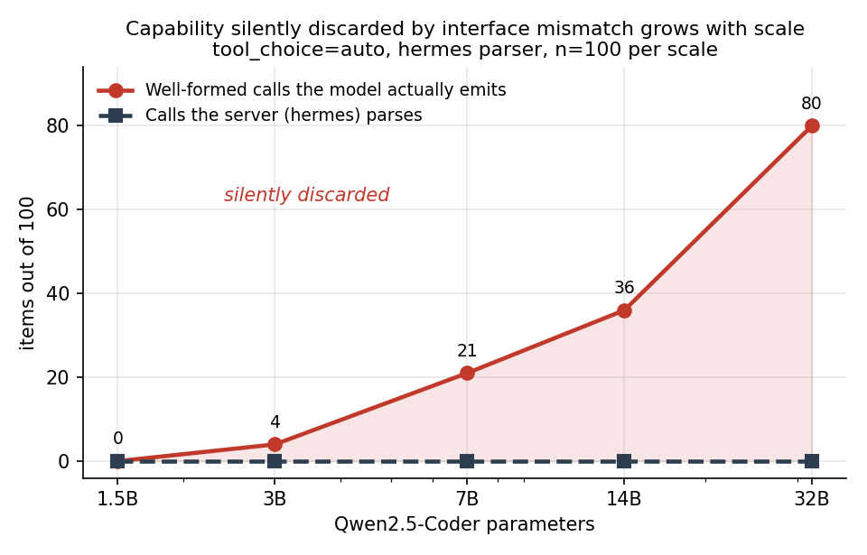
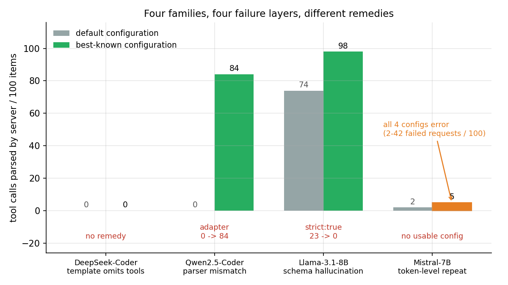
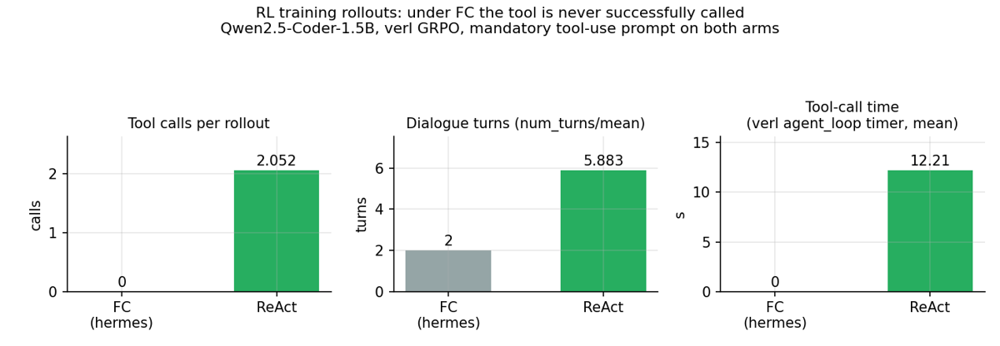
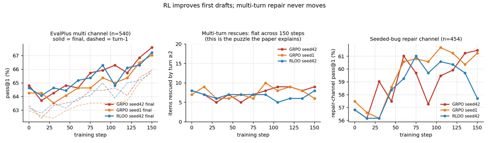

⚠️ Justification de la priorité A, contre les signaux d'entrée. Affiliation (auteur unique, CityU HK), traction (non mesurable) et venue (preprint) donneraient B/C selon la règle de sélectivité. Je passe outre pour une raison opérationnelle : c'est le seul papier du corpus qui documente, instrumente et mesure une panne silencieuse de harness capable de mettre zéro rollout exploitable dans une boucle RL sans lever la moindre erreur, et qui livre le test de dépistage correspondant. Le coût d'ignorer ce mémo est une semaine de TPU ; le coût de le lire est 20 minutes.
Le taux d'appels d'outils rapporté par une éval d'agent n'est pas une propriété du modèle mais du contrat à trois (ce que le checkpoint a appris à émettre × ce que le chat template lui demande d'émettre × ce que le parser est défini à accepter) ; quand ce contrat casse, le serveur renvoie HTTP 200 avec tool_calls: [] — strictement indiscernable d'un modèle qui refuse d'utiliser l'outil — et la distorsion se propage à l'intérieur de la collecte de rollouts RL, où 45 générations sur 115 portent un appel complet et aucune ne devient une action.
Claim principal, formulé précisément. (i) Sur les données, l'exécuteur et le scorer de BFCL v4, à poids / cas / décodage / seeds fixés et en ne changeant que la configuration de l'adaptateur de serving, le même modèle marque 0.00 ou 0.96 / 0.19 (simple_python / multi_turn_base) [§4.1] ; (ii) un 2×2 template × parser place les deux effets principaux exactement à zéro et la totalité de l'effet dans l'interaction — aucun composant n'est défectueux, réparer un seul côté du contrat ne rapporte exactement rien [Tab. bfcl2x2, §4.1] ; (iii) dans verl à 7B, 45/115 générations portent un appel complet, 0 accepté, 0 exécuté, 0 observation retournée [Tab. rolloutprobe, §4.8] ; (iv) réparer l'interface restaure le mécanisme (parse 0→84, sauvetages 0→9) mais pas un gain d'outcome significatif (53→62, p=0.093) [Tab. repair, §4.7].
retail (115 tâches interactives, utilisateur simulé) [§4.2].clean[:100] pour les 50 bras longs → réplication sur 300 items tirés au hasard (seed 20260901) pour la généralisation [§3, App. H item 2]. Pour BFCL : enregistrement du handler OpenAI de BFCL en mémoire à l'import, de sorte que les fichiers de bfcl_eval restent byte-identiques ; un proxy enregistreur s'intercale entre benchmark et serveur et logge chaque requête [App. G.4].clean[:100], pas un tirage aléatoire — les auteurs le disent et fournissent la réplication sur 300 items aléatoires, qui déplace le barreau 7B de 21 à 30 emitted calls [App. H item 2]. Donc un sous-ensemble de 100 items n'est pas un estimateur stable d'un barreau intermédiaire, et les auteurs l'écrivent.Qwen2.5-Coder-1.5B-Instruct [Tab. trainconfig].tight, 28 strong-non-tight, 30 ni l'un ni l'autre — sur-échantillonnage délibéré de la frontière de décision), par deux annotateurs aveugles indépendants, plus un troisième adjudicateur sur les 15 items non unanimes [App. F]. Heures / coût : non précisé.Thought: / Action: run_tests / Action Input: (bloc de code fencé python) / Observation: (rempli par le système) / Final Answer:. Nom d'outil figé dans le template. Deux forces : optional (réponse directe permise) et mandatory (Action obligatoire d'abord). Prompts en chinois, reproduits verbatim en annexe — les auteurs refusent de les traduire car « une traduction est un troisième prompt » [App. C.1].tool_choice: auto, un seul outil.terse, recopié) [App. C.3] :{"type": "function", "function": {"name": "run_tests", "description": "…", "parameters": {"type": "object", "properties": {"code": {"type": "string"}}, "required": ["code"]}}}
Trois variantes : terse (ci-dessus — celle à laquelle on arrive en suivant la doc API, et sous laquelle apparaît le taux de 23 % de mauvais outil de Llama) ; rich (description + contre-exemple + exemple de code, avec l'avertissement explicite « cet outil n'est pas la fonction que tu dois implémenter ») ; strict (strict: true + additionalProperties: false, avec VLLM_ENFORCE_STRICT_TOOL_CALLING=true, le défaut).
- Single/multi-turn. Multi-turn des deux côtés. Horizon maximal : non précisé explicitement ; horizons observés : à l'éval, mean turns 1.92 (ReAct) / 0.96 (FC+hermes) / 1.82 (FC+adaptateur) [Tab. repair] ; à l'entraînement, num_turns/mean 2.000 constant (FC) contre 5.883 (ReAct) [Tab. training]. max_tokens = 2048 pour les deux protocoles (⚠️ errata : sept bras ReAct ont tourné à 1024 en enregistrant 2048 — l'asymétrie favorisait FC, et re-tourner à 2048 change le pass final de ≤1 item) [§3, App. A.1]. BFCL : max_model_len = 16384 [App. G.4]. Gestion du contexte long (troncature/résumé/mémoire) : non précisé ; en revanche la sonde tronque le texte brut stocké à 4000 caractères, et 10 des 98 sorties échantillonnées atteignent ce plafond → les comptages d'appels émis sont un minorant [§3.1, App. F].
- Exécution. vLLM 0.27.1 en serving, verl 0.9.0 (backend rollout vLLM) à l'entraînement ; outil run_tests = pytest en sandbox ; matériel = une seule carte A800 80 GB [§3, Tab. trainconfig]. Déterminisme : temperature=0 est greedy mais pas bit-à-bit déterministe sous continuous batching — les auteurs le disent et en tirent la conséquence : le bras BFCL réparé bouge d'un cas entre deux runs (197 vs 196 parsed, 99 vs 98 executed), donc les colonnes intermédiaires du funnel sont rapportées à ±1 et non comme exactes [§3, App. G.4]. Reset / timeouts : un timeout dans le sandbox score 0 [App. G.13] ; politique de reset non précisée.
- Gestion des erreurs d'outils et des sorties mal formées. C'est l'objet du papier. Deux dispositifs :
1. Gating de validité des bras, appliqué en code (validate_arms.py, final_table.py, pas par convention) : un bras n'est admissible pour comparaison de pass rate que s'il a exactement 100 items, exit code 0, zéro erreur de requête, et une provenance (modèle / protocole / température / max_tokens / adaptateur) conforme à la configuration visée. Les bras avec erreurs gardent un recensement d'erreurs valide mais sont N/A en pass rate, et aucune p-value n'est calculée pour eux. Un p=0.648 d'une version antérieure, calculé sur un tel bras, est rétracté [§3.3, App. A.3].
2. Contrôle positif de l'instrument avant d'attribuer un zéro au modèle : même serveur, modèle, outils et prompt, en ne changeant que tool_choice — sous auto le serveur renvoie finish_reason = stop avec tool_calls = 0 pendant que l'assistant écrit la solution en bloc de code ; sous required il renvoie un appel parsé nommant run_tests avec du vrai Python dans arguments. ⚠️ Les auteurs précisent eux-mêmes la limite : cela établit que le pipeline peut accepter un appel conforme, pas que le zéro sous auto vienne du modèle (required passe par du décodage contraint) [§3.2].
Trois parties configurées indépendamment [§1] : 1. ce que le checkpoint a été entraîné à émettre ; 2. ce que le chat template lui dit d'émettre ; 3. ce que le parser est défini à accepter.
Cas canonique : Qwen2.5-Coder émet un appel JSON bien formé mais nu, dans un bloc de code fencé json, et jamais l'enveloppe <tool_call> ; le parser hermes n'accepte que cette enveloppe. Donc hermes ne voit rien — et c'est un comportement correct, pas un bug [§1, §4.3]. L'appel reste dans content, tool_calls est un tableau vide, le code HTTP est 200.
Chaîne de censure : emission → serialization → parse → execution. La censure peut survenir à n'importe quelle frontière, et à chacune l'observable est identique : HTTP 200 + tool_calls: [] [§1].
Deux directions, instanciées proprement toutes les deux [§1] :
- masking — un appel valide n'est pas reconnu, l'action n'atteint jamais l'environnement (Qwen2.5-Coder, §4.3) ;
- suppression — un appel invalide est retiré du support échantillonnable avant de devenir une action (Llama + strict, §4.5).
D'où la formulation que je retiens : l'interface de serving est simultanément une partie de la fonction de mesure et une partie de l'espace d'actions effectif de l'agent — littéralement sous RL, où ce que la politique émet doit survivre à la sérialisation et au parsing avant de devenir une action qui gagne une récompense [§1].
Ce n'est pas un bug de parser, et c'est démontré, pas affirmé. Rejeu ligne à ligne de l'extracteur hermes de vLLM sur tous les premiers tours stockés de l'archive — 4254 après suppression des doublons byte-identiques — : zéro cas où le serveur a échoué à parser un appel que ses propres règles auraient accepté. « Parser loss » = 0 dans chaque bras [§1, §4.3, Tab. layer, App. G.3].
Taxonomie en quatre couches, quatre familles, quatre remèdes [§4.6, Tab. taxonomy_full] :
| Famille | Couche | Symptôme | Détectable à l'avance ? | Remède |
|---|---|---|---|---|
| DeepSeek-Coder | template | le chat template n'injecte jamais tools |
✅ inspection du template | aucun |
| Qwen2.5-Coder | parser | émet un bloc JSON fencé, pas <tool_call> |
❌ le test de template donne un faux positif | adaptateur dédié |
| Llama-3.1-8B | schema | appelle la fonction de la tâche comme outil (23 %) | ❌ exige l'inspection des arguments | strict: true |
| Mistral-7B-v0.3 | token | répète [TOOL_CALLS] → HTTP 400 |
~ erreurs, mais seulement parfois | aucun trouvé |
Le faux positif est le point le plus vicieux. Le test de dépistage naturel — « est-ce que apply_chat_template(tools=...) rend bien le schéma ? » — rejette correctement DeepSeek-Coder mais accepte Qwen2.5-Coder, qui hérite le scaffolding Hermes de Qwen2.5-Instruct via tokenizer_config.json sans jamais avoir été entraîné dessus. Conclusion des auteurs : le support du protocole est une propriété par-checkpoint et n'est pas inférable du chat template [§4.6, App. B]. Corollaire d'infra : les templates vivent dans tokenizer_config.json et peuvent changer sans changement de modèle → il faut épingler les révisions HF [App. H item 16].
Une seule panne est bruyante. Sur l'omission des flags par famille [Tab. serving, App. D.1] : seul --enable-auto-tool-choice manquant produit un HTTP 400. Toutes les autres omissions renvoient HTTP 200 avec tool_calls vide. Et le cas Qwen2.5-Coder n'a aucune configuration stock fonctionnelle : il faut installer un parser <tools> communautaire plus son chat template.
Trois pièges d'infra spécifiques à la boucle d'entraînement, chacun documenté et chacun coûteux [§2, App. D.3–D.5] :
verl/experimental/agent_loop/tool_parser.py, enregistré comme hermes, adapté de vLLM v0.9.1. multi_turn.format=hermes sélectionne ce parser, pas celui du serveur. Donc brancher un plugin de parser sur le serveur vLLM de rollout ne change strictement rien à l'entraînement — « une distinction qui nous a coûté une conception d'expérience » [§2, App. D.5(i)].timing_s/agent_loop/tool_calls est un temps écoulé en secondes ; la lire comme un compte est une erreur dure, et les auteurs la signalent parce que le nom y invite [App. D.3].sandbox.run_tests. La fonction de reward évalue le programme final par la même fonction ; un compteur à cet endroit confond évaluation de la récompense et usage d'outil par l'agent. Les auteurs ont heurté le problème, déplacé le compteur vers les deux sites d'appel côté agent (CodeTool.execute pour FC, ReActAgentLoop._run_tests pour ReAct), et renommé celui du sandbox en sandbox_exec_count pour que les deux ne puissent plus jamais être confondus [App. D.3].Résultat de l'instrumentation : le fichier de compteur du bras FC a 0 ligne, celui de ReAct en a 788, toutes étiquetées react. Trois signaux mutuellement indépendants concordent : num_turns collé à son minimum de 2, temps d'outil exactement 0.00 s, compteur dédié à 0.000 [App. D.3, Tab. training].
Borne de formulation, posée par les auteurs eux-mêmes : ce qui est mesuré est « appels acceptés par le parser et exécutés = 0 », pas « le modèle n'a jamais tenté d'appeler » — les rollouts FC n'ont pas été sauvegardés [§4.8, App. H item 11].
Le papier ne recopie pas de trajectoire complète. Il recopie en revanche la signature du mauvais appel de Llama/Qwen-1.5B [App. C.5, App. A.2] :
{"name": "join_integers", "arguments": {"int_array": [1, 2, 3]}} — le modèle appelle la fonction qu'il est censé écrire ; run_tests ne reçoit aucun code.{"name": "run_tests", "arguments": {"code": "def join_integers(int_array):\n return ','.join(map(str, int_array))"}}.Noms réellement observés dans le re-run ciblé sur les 23 items : can_form_word, check_password_strength, floyd_warshall [App. A.2].
Deux vérifieurs distincts dans ce papier, à ne pas confondre : le reward d'entraînement et le classifieur d'intention qui sert d'instrument de mesure.
reward_code.py)pytest propre à l'item dans le sandbox, renvoie le ratio de passage [App. G.13].(\d+) passed sur le buffer stdout/stderr fusionné et prend la première occurrence → un programme qui imprime lui-même une ligne façon pytest pourrait être scoré sur sa propre sortie. N'exige aucune compréhension du harness et pourrait se déclencher par accident ;skipped / xfail ne sont pas au dénominateur → un rollout qui saute les tests durs est scoré sur le sous-ensemble qu'il n'a pas sauté."N passed" imprimé, de pytest.skip/allow_module_level, de sys.exit/os._exit ; et critic/rewards/mean oscille dans 0.46–0.73 sans le saut d'échelon que produit un exploit découvert. ⚠️ Limite de l'audit, énoncée par les auteurs : le texte complet des rollouts n'a pas été conservé, l'audit ne couvre donc que les fragments que ces logs portent.mode="script", exit code seul, all_passed exigeant en plus status=="ok"), donc aucune des deux coutures ne peut les atteindre [App. G.13].skipped/xfail, séparer le stdout du modèle de la sortie du harness. Non appliqués pour ne pas rendre les futurs runs incomparables à ceux rapportés [App. G.13].C'est l'instrument qui permet de dire « le modèle a émis un appel que le serveur a jeté ». Une seule fonction (analysis/intent.py), partagée par tout le texte, tous les tableaux et toutes les figures, sans aucun réglage par bras [§3.1, App. C.6]. Recopié verbatim :
TIGHT = re.compile(
r'"name"\s*:\s*"run_tests".{0,200}?"arguments"\s*:\s*\{'
r'.{0,80}?"code"\s*:\s*"(.{0,4000}?)"\s*\}', re.S)
REAL = re.compile(r'\\n|def |class |return |import |lambda ')
def is_tight_call(raw):
m = TIGHT.search(raw or "")
return bool(m and REAL.search(m.group(1)))
Trois tiers emboîtés, non exclusifs : tight (nom + objet arguments + clé code dont la valeur est un littéral chaîne contenant du vrai Python — exclut l'écho de schéma, les identifiants passés à la place de chaînes comme "code": test_code, et les placeholders "<your code here>") ; strong ⊇ tight (tag de trajectoire json_named_call ou xml_tool_call, sans exigence sur le payload) ; weak (structure JSON ne nommant pas l'outil, disjoint des deux autres — à 1.5B presque entièrement des faux positifs, rapporté séparément et jamais fusionné) [§3.1, App. C.6].
Fiabilité du vérifieur — mesurée, et c'est rare [App. F] :
| Mesure | Valeur | Source |
|---|---|---|
| Round 1 (texte brut seul), accord / κ / précision / rappel | 86.7 % / 0.713 / 70.0 % / 96.6 % (12 FP, 1 FN) | Tab. validation |
| Après adjudication (round 1) | 96.9 % / 0.936 / 95.0 % / 97.4 % (2 FP, 1 FN) | Tab. validation |
| Inter-annotateurs A1 vs A2, items où les deux lisent les mêmes octets (n=62) | κ = 0.967 [0.897, 1.000] | Tab. interannotator |
| Classifieur vs gold standard adjudiqué (n=97) | κ = 0.871 [0.756, 0.958] | Tab. validation2 |
Précision du stratum tight vs gold standard |
36/40 = 0.900 → le 80/100 à 32B corrige à ≈72 | App. F |
Trois points de méthode à voler tels quels :
- Les auteurs invalident leur propre première adjudication. Les 13 items ré-examinés au round 1 étaient exactement ceux où l'annotateur divergeait du classifieur (recouvrement 13/13) et les 10 renversements allaient tous vers le classifieur, aucun en sens inverse. « Sous cette règle de sélection l'accord ne peut que monter, donc 0.713 → 0.936 est une propriété du choix des items ré-examinés, pas une preuve de fiabilité. » Ils rapportent le second annotateur à la place [App. F].
- Règle d'adjudication fixée à l'avance pour le second round : revoir toutes les divergences à trois, jamais seulement celles qui s'opposent au classifieur. L'adjudicateur tiers s'est éloigné du classifieur 6 fois sur 15 — « c'est ce chiffre-là qui compte ; la première adjudication s'en était éloignée 0 fois sur 13 » [App. F].
- Le facteur de correction a bougé deux fois et ils publient la trajectoire : 0.950 (adjudication biaisée) → 0.975 (A2 seul) → 0.900 (gold standard adjudiqué). Appliqué uniformément, la tendance est inchangée : 0, 3.6, 18.9, 32.4, 72 contre un zéro côté serveur à chaque taille. Les comptages bruts sont rapportés partout avec le facteur énoncé, plutôt que rescalés silencieusement [App. F].
gpt-4o du harness original → les scores absolus ne sont pas comparables au leaderboard τ-bench, seule la différence inter-bras est revendiquée [§4.2].Qwen2.5-Coder-1.5B-Instruct ; framework verl 0.9.0 (backend rollout vLLM 0.27.1) ; trajectoires par step = train_batch_size 16 × rollout.n 8 = 128 ; steps = 150 (runs historiques) et 10 / 3 / 75 pour les bras de §4.8–4.9 ; agent loop tool_agent (FC) ou react_agent (ReAct) ; outil run_tests à un argument code, pytest sandboxé ; prompt système FC_MANDATORY / ReAct mandatory — force appariée ; matériel une A800 80 GB.critic/rewards/mean monte de 0.233 à 0.281 : la branche sans outil est continûment renforcée pendant que la branche outil a un retour à zéro échantillon dès le step 1.Format : comportement → détection → correction. Douze cas, dont une majorité n'est documentée nulle part ailleurs dans le corpus.
hermes) → appel JSON nu bien formé, jamais l'enveloppe <tool_call> ; HTTP 200, tool_calls: [] → détecté par le critère d'intention sur les octets émis + re-parse offline des mêmes octets sous 4 règles + rejeu ligne à ligne de l'extracteur → corrigé par un adaptateur dédié (parser <tools> communautaire + chat template + few-shot) : parse 0 → 84/100 à 7B [§4.3, §4.7, Tab. reparse].strict: true : 23 → 0 (p=0.0001) [§4.5, App. A.2].tools → détecté par inspection du template (le seul cas que le test naturel attrape) → aucun remède trouvé [§4.6].[TOOL_CALLS] → HTTP 400 ; aucun run FC de 100 items admissible, sous aucune des quatre configurations (erreurs : parser seul 2 ; template officiel 42 ; parser+strict 3 ; template officiel+strict 39) → la configuration recommandée par vLLM elle-même fait passer le taux d'erreur de 2 % à 42 %, et strict, qui répare Llama, n'aide pas → aucun remède [§4.6].apply_chat_template(tools=...) rend le schéma pour Qwen2.5-Coder (scaffolding Hermes hérité de Instruct via tokenizer_config.json) alors que le checkpoint n'a jamais été entraîné dessus → l'inspection de template ne suffit pas, le support du protocole est une propriété par-checkpoint [§4.6].Thought ajouté à FC : mauvais outil 23 → 59 (p<0.001, pire) — le modèle fournit exactement les paramètres sur lesquels il vient de raisonner ;
- prompt mandatory au lieu d'optional sur Coder-1.5B : appels acceptés toujours 0/100, pass final 31 → 15, sorties non parsables ~0 → 46/100 ;
- few-shot de désambiguïsation de rôle à 1.5B : appels récupérables 52 → 64, appels nommant run_tests toujours 0, pass final 15 → 13 — « le modèle est devenu plus fluide à émettre le mauvais appel ».
→ Règle à retenir : quand un agent semble réticent à utiliser ses outils, renforcer l'instruction est la chose la moins chère à essayer et la plus susceptible d'induire en erreur — ça dégrade la performance tout en laissant le compteur d'appels à zéro, ce qui ressemble à un modèle à la fois récalcitrant et incapable.<tools> : zéro tag <tools> sur 100 items, 99 réponses en code direct) tout en résolvant la tâche à un taux comparable (final 53) → « les adaptateurs ne sont pas un interrupteur universel » [App. G.8].get_weather, un outil absent du schéma : laissé tel quel il aurait induit des appels à un outil inexistant, gonflant simultanément le compte d'initiations et la statistique d'arguments vides → corrigé en réécrivant les few-shots vers run_tests, hashes de l'original et du modifié conservés [App. A.6, App. G.8].timing_s/agent_loop/tool_calls dans verl est un temps en secondes, pas un compte [App. D.3].sandbox.run_tests confond évaluation de la récompense et usage d'outil, parce que la fonction de reward passe par la même fonction [App. D.3].(\d+) passed sur stdout/stderr fusionné ; skipped/xfail hors dénominateur), atteignables en principe, auditées, aucune preuve d'exploitation (zéro "N passed" imprimé, zéro pytest.skip, zéro sys.exit sur les cinq logs qui gardent du code ; critic/rewards/mean oscille 0.46–0.73 sans saut d'échelon) [§6, App. G.13].Comportements émergents inattendus. Positif : avec strict, la chaîne contrainte → exécution valide (73→97) → performance de tâche (turn-1 33→46, final 44→61) : 23 items qui ne produisaient aucun code exécutable s'exécutent et deviennent réparables [§4.5]. Négatif : la boucle de réparation absorbe la perturbation en amont — pass final ReAct identique (72/72/72) à temperature=0.6 alors que les ensembles résolus ont un Jaccard par paires de 0.71–0.80 (15–24 items diffèrent) ; entre les steps 15 et 30, 85 des 542 complétions de premier tour changent verbatim et 6 items basculent (3 gagnés, 3 perdus) pour un total numériquement identique (340/346 aux deux checkpoints). Conséquence de mesure : un pass rate agrégé est un mauvais instrument pour détecter du changement dans un agent multi-turn — il est stabilisé par le mécanisme même qu'on étudie, et la comparaison d'ensembles au niveau item détecte le mouvement que le total dissimule. « Si nous n'avions rapporté que les totaux, nous aurions conclu — deux fois, sur deux axes différents — qu'il ne se passait rien » [App. G.10].
C'est le livrable du papier. Quatre niveaux, du moins cher au plus cher.
Niveau 0 — preflight_toolcall.py, 98 lignes, publié [§5, App. D.1]. Tourne en secondes et « aurait attrapé toutes les pannes silencieuses rapportées ici » :
1. émettre une requête canonique portant tools ;
2. asserter que tool_calls est non vide, avec le nom attendu et des arguments parsables ;
3. répéter sous tool_choice: required comme contrôle positif (cela sépare « le serveur ne peut pas » de « le modèle ne sait pas spontanément »).
Niveau 1 — ne pas se fier à l'inspection du template. Elle donne un faux positif sur Qwen2.5-Coder. Le support du protocole est une propriété par-checkpoint [§4.6].
Niveau 2 — rapporter la composition, pas le modèle. Toute éval d'agent doit rapporter au minimum : (i) appels parsés par le serveur, (ii) appels émis mais non parsés sous un critère énoncé, (iii) erreurs de requête, (iv) la configuration de serving exacte. Ne rapporter que (i) est la pratique que ce papier attaque — et (ii) est là où vit toute la tendance d'échelle [§5].
Niveau 3 — à l'intérieur de la boucle RL, et c'est celui qu'on oublie. « Les praticiens doivent vérifier un compte d'exécutions d'outils non nul au premier step d'entraînement avant d'interpréter le moindre résultat multi-turn » [§5]. Trois précisions non négociables tirées de App. D.3–D.5 : - le preflight doit tourner dans le chemin de rollout du framework RL, pas seulement contre le serveur : verl parse avec son propre registry, un plugin côté vLLM ne l'atteint pas ; - le compteur doit être aux sites d'appel côté agent, jamais dans la fonction de sandbox que la récompense utilise aussi ; - ne pas lire une métrique de timing comme un compte.
Condition générale de danger, énoncée par les auteurs [§5] : dès que (a) les trajectoires outil sont censurées à un taux ≈ 1 et (b) la récompense admet un chemin sans outil, la branche outil n'a aucun retour échantillonné et ne peut pas être renforcée. ⚠️ Mon évaluation : c'est la formulation la plus transférable du papier, et elle est indépendante du stack — elle s'applique mot pour mot à un harness juridique (cf. §9).
pytest lors du premier passage sur la ladder Instruct, rendant la couche multi-turn vide — les cinq bras ont été re-tournés avec un exécuteur fonctionnel, sans rien changer d'autre ni toucher au binaire de la sonde, et la colonne parse a reproduit valeur pour valeur [§4.4, §4.8, §4.9].⚠️ (d) est en soi un mini-enseignement d'infra : une couche entière du funnel peut être à zéro parce qu'un binaire manque sur l'hôte, et seule la re-mesure couche par couche le distingue d'un échec de modèle.
| Chiffre annoncé | Où il est annoncé | Source dans le papier | Verdict |
|---|---|---|---|
« le même modèle marque 0.00 ou 0.96 / 0.19 » (BFCL simple_python / multi_turn_base) |
abstract, §4.1 | Tab. bfcl2x2 (0/200 vs 196/200 parsés) ; Tab. bfcl5 (multi_turn_base n=100, success 19 → 0.19) |
0.19 confirmé ; 0.96 introuvable en tant que score tabulé — aucun tableau ne donne le score simple_python ; seuls le texte et le compte 196/200 parsés le soutiennent |
| « les deux effets principaux sont exactement zéro et tout l'effet est dans l'interaction » | abstract, §4.1 | Tab. bfcl2x2 : 0/200, 0/200, 0/200, 196/200 | confirmé |
| τ-bench : appels parsés 0 → 636, tâches atteignant une exécution d'outil 0 → 103 | abstract, §4.2 | Tab. tau (0 vs 636 parsés, 0 vs 636 exécutions, 0 vs 103 tâches, 789 émis-non-parsés, 1389 vs 1971 tours) | confirmé |
| τ-bench : tâches résolues 7 vs 10 | §4.2 | Tab. tau ; McNemar exact p=0.25 | confirmé, et les auteurs écrivent explicitement « nous ne le revendiquons pas » |
| « le serveur parse 0/100 à chaque taille pendant que les appels bien formés émis montent à 80/100 à 32B » | abstract, §4.3 | Tab. scale (0/0, 0/4, 0/21, 0/36, 0/80) ; Tab. reparse (colonne hermes replay à 0 partout) |
confirmé — avec nuance divulguée : la réplication sur 300 items aléatoires donne 0, 4, 30, 40, 81 par 100, donc le barreau 7B passe de 21 à 30 et le sous-ensemble d'origine le sous-estimait [App. H item 2] |
| « ≈72 après calibration contre un gold standard adjudiqué par un tiers » | abstract, §3.1 | App. F : précision du stratum tight = 36/40 = 0.900 ; tendance corrigée 0, 3.6, 18.9, 32.4, 72 |
confirmé |
| « sous une enveloppe appariée, la fraction silencieuse reste à 0–2 — prédiction déposée au dépôt avant le run » | abstract, §4.3 | Tab. counterfactual : silent fraction 1, 1, 2, 0 (Qwen3 0.6B→8B) ; p4/PREREGISTRATION.md |
confirmé, avec deux réserves énoncées par les auteurs : colonne parsée non monotone (86/44/70/97) → présence, pas tendance ; et Qwen3 servi avec enable_thinking=false (sinon le modèle épuise son budget de tokens dans un bloc <think>), déviation de protocole enregistrée avant le run. La ladder change famille et enveloppe ensemble |
« le taux de 23 % de Llama-3.1-8B appelant la fonction de la tâche tombe à 0 sous un seul flag strict: true » |
abstract, §4.5 | Tab. controls (23 → 0, p=0.0001) ; Tab. llama_arms (wrong-tool 23 / 22 / 0) | confirmé — et c'est le seul résultat, avec l'écart de protocole, qui survit à Bonferroni (seuil ≈0.0042) |
| « à 7B, 45 des 115 générations portent un appel complet ; 0 accepté, 0 exécuté, 0 observation retournée » | abstract, §4.8 | Tab. rolloutprobe (45 / 12 payload malformé / 58 sans tentative ; 0 / 0 / 0) | confirmé, avec la réserve divulguée que ce run s'est terminé en CUDA OOM pendant l'update → aucun pas de gradient complété |
| « à l'éval, réparer l'adaptateur : parse 0→84, sauvetages 0→9, pass 53→62 (n.s.) » | abstract, §4.7 | Tab. repair (0 / 84 parsés ; 0 / 37 ≥2 tours ; 0 / 9 sauvés ; 53 / 62) ; p=0.093 | confirmé, y compris le « n.s. » ; réplication pré-planifiée sur 300 items : 160/300 → 178/300, p=0.0385 — ne survit pas au seuil Bonferroni ≈0.0042, et les auteurs écrivent « nous ne faisons reposer aucune revendication dessus » |
| « nous publions un preflight de 98 lignes qui attrape toutes les pannes silencieuses rapportées ici » | abstract, §5, App. D.1 | App. D.1 décrit les 3 étapes du script ; aucune évaluation du script sur les 4 familles n'est tabulée | introuvable — affirmation de conception, non mesurée. ⚠️ Plausible par construction pour les couches parser/schema/token, mais le script tel que décrit ne teste pas le chemin de rollout du framework RL, qui est précisément le cas le plus coûteux (App. D.5(i)) |
| « plage d'échelle de 21× » | abstract | 1.5B → 32B = 21.3× | confirmé |
| « zéro cas où le serveur a échoué à parser un appel que ses propres règles auraient accepté, sur 4254 premiers tours dédupliqués » | §1, §4.3 | Tab. layer (colonne parser loss = 0 dans tous les bras) |
confirmé |
| « roughly two fifths of what looked like a protocol effect was an interface effect » | §4.5 | Tab. decomposition : réparation d'interface +12 (p=0.0075), protocole +19 (p=0.0019), les deux +31 | confirmé (12/31 = 0.387) |
| « 91–94 % des items nouvellement résolus passaient au premier tour ; sauvetages plats à 6–9 / 540 » | §1 | Fig. 4 (panneau central : rescues 5–10 sur 150 steps, 3 runs) ; Tab. sufficiency (8, 6, 6, 8, 6) et séquences historiques [7,9,6,6,7,6,10,8,9,8,6] etc. | confirmé |
Verdict global de cohérence : bon. Un seul chiffre (0.96) n'est pas traçable à un tableau. À l'inverse, le papier rétracte un p=0.648 antérieur, corrige un taux d'initiation de 97 à 74, invalide sa propre première adjudication, désavoue son diagnostic antérieur sur le guided decoding, et publie une trajectoire de facteur de correction (0.950 → 0.975 → 0.900). C'est un niveau d'auto-correction très au-dessus de la norme.
| Mesure | Config documentée | Config réparée | Source |
|---|---|---|---|
| BFCL v4, premières requêtes parsées (n=200) | 0 (0 erreur HTTP, 166 tight émis) |
196 (197 au second run) | Tab. bfclfunnel, §4.1 |
BFCL multi_turn_base (n=100) : exécutés / succès |
0 / 0 (69 tight non parsés) |
98 / 19 | Tab. bfcl5 |
τ-bench retail (115 tâches) : appels parsés |
0 (789 émis non parsés sur 1389 tours) | 636 | Tab. tau |
| τ-bench : tâches entrant dans la boucle d'outils | 0 | 103 | Tab. tau |
Qwen2.5-Coder, parsés / émis tight par taille |
0 / 0, 0 / 4, 0 / 21, 0 / 36, 0 / 80 | — | Tab. scale |
| Contrefactuel Qwen3 apparié, fraction silencieuse | — | 1, 1, 2, 0 (parsés 86, 44, 70, 97) | Tab. counterfactual |
| Qwen2.5-Instruct (même interface mismatchée), parsés | 1, 11, 63, 77, 88 vs Coder 0 partout | — | Tab. instruct |
| Sauvetages Instruct, corrélés à la colonne parse | 0, +3, +6, +14, +23 | — | Tab. instruct |
| Llama-3.1-8B : appels / mauvais outil / exécutés / turn-1 / final | terse 97 / 23 / 74 / 34 / 49 | +tmpl+strict 98 / 0 / 97 / 46 / 61 |
Tab. llama_arms |
| Qwen-7B boucle de réparation : parsés / ≥2 tours / final / sauvés | FC+hermes 0 / 0 / 53 / 0 | FC+adaptateur 84 / 37 / 62 / 9 (ReAct : 95 / 40 / 74 / 17) | Tab. repair |
| Rollouts RL : appels/rollout, tours, temps d'outil | FC 0.000 / 2.000 / 0.00 s | ReAct 2.052 / 5.883 / 12.21 s | Tab. training |
| Sonde dans verl à 7B (115 générations) | 45 complets / 0 acceptés / 0 exécutés / 0 observations | — | Tab. rolloutprobe |
Décomposition de la couche d'échec [Tab. layer] : Coder échoue à 100 % à la couche enveloppe à toutes les tailles (0 payload malformé, 0 strictness, 0 parser loss) ; Instruct atteint l'enveloppe et casse le payload (3B : 22 sans enveloppe / 41 payload malformé / 26 strictness seule / 0 parser loss), presque toujours en laissant des guillemets de docstring ou des retours à la ligne bruts non échappés à l'intérieur de la chaîne code.
{"order_id": "W123"}, vs un programme entier chez eux), le rejeu de l'extracteur sur les 789 tours émis-non-parsés place 789/789 (100 %) à la couche enveloppe, avec 0 payload malformé, 0 récupérable par décodage indulgent, 0 parser loss. Même signature qu'en code : appel nu dans un fence json, jamais l'enveloppe. À l'inverse, Qwen2.5-Instruct perd 41 % de ses items non parsés en payloads malformés sur la tâche de code — un mode d'échec que des arguments scalaires courts ne peuvent pas produire. Les auteurs énoncent explicitement : « nous attendons que le résultat de couche enveloppe généralise et que les proportions de couche payload non — et nous le posons comme prédiction, pas comme mesure, ayant testé un domaine non-code et non un échantillon de domaines » [§4.2].| Ablation | Résultat | Ce qu'elle isole |
|---|---|---|
| 2×2 template × parser (BFCL) | 0/200, 0/200, 0/200, 196/200 | L'effet est purement interactionnel : réparer un seul côté du contrat ne rapporte exactement rien |
| Re-parse offline des mêmes octets sous 4 règles | hermes replay = 0 partout ; bare JSON = 0, 5, 22, 42, 100 ; tight = 0, 4, 21, 36, 80 |
Exclut « votre extracteur est simplement meilleur que hermes » |
| Rejeu ligne à ligne de l'extracteur | parser loss = 0 dans 100 % des bras, 4254 tours | Exclut « c'est un bug de parser » |
| Ladder sous enveloppe appariée (Qwen3) | fraction silencieuse 1, 1, 2, 0 | Exclut la croissance de capacité comme cause suffisante (mais ne isole pas l'enveloppe : la ladder change famille + enveloppe) |
| Contrôle intra-lignée (Qwen2.5-Instruct) | parsés 1, 11, 63, 77, 88 vs 0 partout | Localise le mismatch dans l'entraînement spécifique au checkpoint, pas dans la famille ni le template partagés, ni le nombre de paramètres seul. Les auteurs s'arrêtent avant de nommer l'entraînement au format tool-call comme la cause : les deux diffèrent par tout leur mélange de post-training |
| 4 contrôles à variable unique sur Llama | rich 23→22 (p=1.000) ; Thought 23→59 (p<0.001, pire) ; template officiel 23→22 (p=0.125) ; strict 23→0 (p=0.0001) |
Les trois premiers rejettent leur explication alternative et désignent le modèle ; le quatrième trouve la cause et retire cette conclusion |
| Conditionnement sur un parse réussi | Qwen : +8.4 pp, IC95 [−0.5, +17.4], p=0.118 ; Llama : p=0.0021 | ⚠️ Conditionnement post-traitement : le fait qu'un item parse est déterminé par l'interface sous test, donc le sous-ensemble « les deux ont parsé » n'est pas un sous-échantillon aléatoire. Les auteurs : « nous ne détectons pas de résidu, ce qui n'est pas la même chose que d'établir qu'il n'y en a pas » |
run_tests → échec de capacité, pas de parser). Les auteurs rapportent les deux échelles séparément plutôt que de fusionner [§4.8].hermes et 0 sous son propre parser granite → bras non informatif plutôt que confirmatoire, et les auteurs ne revendiquent rien dessus — « c'est ce bras de secours qui nous dit que le bras est non informatif » [§4.3].temperature=0. La variance n'est estimée que sur Llama-3.1-8B, où 2 des 3 bras FC seulement sont admissibles (seed 3 rejeté : appels d'outils parallèles refusés par vLLM) → intervalle [62, 66] et aucun écart-type. Les auteurs ajoutent le garde-fou correct : les trois finals ReAct identiques (72/72/72) sont une coïncidence de totaux, pas des ensembles d'items identiques, et sd = 0.00 ne doit pas se lire « ReAct est parfaitement stable ».script_sha256 n'a jamais pu être ajouté (patch interrompu deux fois), l'identité du script est garantie extérieurement par hashage avant/après lancement.Verdict. Solide sur le mécanisme (mesure en cinq couches, décomposition 2×2, contrefactuel préenregistré, zéro parser loss sur 4254 tours) ; fragile sur l'effet d'outcome — aucun gain de performance ne survit à Bonferroni, et les auteurs le disent avant qu'on ne le leur reproche ; non prouvé sur la causalité RL — il n'existe aucun bras repaired-FC d'entraînement, la comparaison change protocole et interface ensemble, et les auteurs refusent explicitement de revendiquer « la censure empêche le RL d'apprendre la réparation multi-turn ». Ce qu'ils revendiquent et qui tient : la censure d'interface est observable directement dans la collecte de rollouts et élimine les échantillons médiés par outil.
⚠️ Mon évaluation du cas le plus inconfortable, que les auteurs mettent eux-mêmes en conclusion : trois contrôles à variable unique sur un échec de 23 % ont conclu à un défaut du modèle ; un quatrième, tiré d'une phrase de la documentation de serving, l'a réduit à zéro. Et leur propre validation humaine a reproduit le mécanisme : douze annotations sur 98 ont manqué un appel parce qu'il se trouvait après un bloc de code fencé. Rapporter des taux d'appels d'outils parsés côté serveur comme une capacité du modèle n'est pas un défaut sûr.

Ce qu'il faut voir : la forme du funnel. Panneaux rouges (configuration documentée) : Qwen-32B émet 80 appels bien formés puis 0 / 0 / 0 / 0 sur parsed / executed / Observation / rescued ; Qwen-7B émet 21 et tombe au même zéro — et le pass final reste à 68 et 53, donc rien dans le résultat agrégé ne signale la panne. Panneaux verts : avec l'adaptateur dédié, 84 parsés → 83 exécutés → 37 observations → 9 sauvetages ; ReAct en référence 95 → 92 → 41 → 17. Noter la note de bas de figure : la colonne « emitted » est N/A et non zéro quand le serveur parse, car un parse réussi déplace l'appel danstool_calls et vide content — c'est la raison pour laquelle on ne peut pas mesurer les deux colonnes dans le même bras.

Ce qu'il faut voir : la ligne pointillée sombre (appels parsés par le serveur) est plate à zéro de 1.5B à 32B pendant que la courbe rouge (appels bien formés réellement émis) monte 0 → 4 → 21 → 36 → 80. L'aire rosée est littéralement la capacité jetée en silence. Le point à retenir pour un praticien : plus le checkpoint est gros, plus la panne est coûteuse, et l'indicateur de surveillance évident reste constant. Réserves à garder : intra-famille, un seul taux d'échantillon, et le barreau 7B monte à 30 sur la réplication à 300 items.
Ce qu'il faut voir : gris = la configuration à laquelle on arrive en suivant la documentation, vert = la meilleure configuration trouvée. DeepSeek-Coder 0 → 0, aucun remède ; Qwen2.5-Coder 0 → 84 par adaptateur ; Llama-3.1-8B 74 → 98 parstrict: true (wrong-tool 23 → 0) ; Mistral-7B en orange parce que les quatre configurations produisent des erreurs (2 à 42 requêtes échouées sur 100), donc ses barres ne sont pas comparables. Il n'existe pas un remède mais quatre, et le diagnostic précède le remède.

Ce qu'il faut voir : trois signaux indépendants, trois zéros. Appels par rollout FC 0 vs ReAct 2.052 ;num_turns/mean FC collé à 2 (son minimum) vs 5.883 ; temps d'appel d'outil FC 0 s vs 12.21 s. Le prompt est mandatory des deux côtés, donc « FC n'a exécuté aucun appel » ne peut pas s'attribuer à une instruction plus faible. ⚠️ Les comptes de steps ne sont pas appariés (10 vs 3) et c'est écrit dans la légende.

Ce qu'il faut voir : c'est le failure mode vu depuis le tableau de bord d'un praticien. À gauche, pass@1 monte sur 150 steps, trois runs (GRPO ×2 seeds, RLOO), tiré par les premiers jets (pointillés) : tout a l'air de fonctionner. Au centre, les items sauvés au tour ≥ 2 ne bougent jamais (5–10 sur 540, du step 0 au step 150). À droite, le canal de réparation sur bug injecté progresse (56 → 61 %), ce qui confirme que le modèle apprend bien quelque chose sur la correction de code — simplement jamais à travers les tours. Diagnostic naturel et faux : « un 1.5B ne sait pas réparer en multi-turn ». Diagnostic réel : l'outil n'a jamais été appelé.| Ingrédient | Choix du papier | Équivalent juridique | Transfert | Ce qui manque |
|---|---|---|---|---|
| Source des tâches | KodCode décontaminé par containment n-gram vs EvalPlus ; clean[:100] + réplication 300 aléatoires |
Questions de recherche juridique minées (mémos, requêtes de praticiens), décontaminées contre Harvey LAB / Vals par containment n-gram sur les faits d'espèce et les citations, pas seulement sur le texte | adaptable | La décontamination juridique doit porter sur les citations et les noms de parties, pas sur les n-grams de surface : une même affaire reformulée passe un filtre n-gram |
| Vérifieur | Exécution de tests, outcome-only, ratio pytest ; 3 routes de hacking fermées par construction, 2 coutures auditées | Pas d'équivalent exact. Vérifiable par brique : existence et bonne forme d'une citation (citator), bon statut (overruled / good law), bonne juridiction, bonne date de vigueur | adaptable pour les briques vérifiables ; non pour l'argumentation | Le papier n'offre aucune méthode pour un vérifieur sans vérité exacte. Mais il offre mieux pour notre problème : la séparation entre « l'outil de vérification a-t-il tourné » et « la réponse est-elle bonne » |
| Harness / outils | Un seul outil run_tests(code: string), pytest sandboxé ; trois variantes de schéma |
search_caselaw(query, jurisdiction, date_range), retrieve(citation), citator(citation), quote_check(citation, passage) — plusieurs outils, sélection parmi alternatives |
adaptable | ⚠️ Tout le papier est mono-outil — « le cas le plus facile pour un parser » [App. H item 1]. La sélection d'outil et les grands schémas sont non testés, donc nos taux de censure seront pires, pas meilleurs |
| Algo | GRPO / RLOO standard, 128 trajectoires/step, 150 steps, 1.5B | GRPO sur Gemini | direct (rien de spécifique) | KL, LR, clipping, normalisation d'advantage non précisés — rien à reprendre côté hyperparamètres |
| Curriculum | Aucun | — | non | Non traité |
| Anti-hacking | Trois routes fermées par construction ; audit passif des deux coutures restantes ; compteur déplacé hors de la fonction partagée avec la récompense | Fermer par construction : une réponse sans appel de citator score 0 ; un timeout du citator score 0 ; une citation introuvable score 0. Et surtout : ne jamais compter les appels de vérification émis par le juge comme des appels de l'agent | direct | — |
| ⭐ Dépistage pré-run en 5 couches + preflight | preflight_toolcall.py (98 l.) + assertion d'exécutions d'outils non nulles au step 1 + rapport des 4 quantités (parsés / émis-non-parsés / erreurs / config) |
Identique, par outil et par juridiction | direct, presque tel quel | Il faut réécrire le critère d'intention par outil juridique (l'analogue de TIGHT/REAL) : c'est l'effort, et il est borné |
Le mécanisme se transpose couche par couche, et chaque couche a une incarnation juridique concrète.
Couche enveloppe (le cas Qwen2.5-Coder, celui qui est invariant au domaine, 789/789 sur τ-bench). Le modèle émet un appel de citator bien formé dans un format que le parser du harness n'accepte pas — par exemple un bloc fencé json nu au lieu de l'enveloppe attendue. Le serveur renvoie 200, tool_calls: [], et l'appel reste dans content. Observable : identique à un modèle qui n'a pas cherché à vérifier sa citation — c'est-à-dire exactement le comportement qu'on veut pénaliser. C'est le résultat du papier que les auteurs attendent voir généraliser hors du code, et leur seul test non-code le confirme à 100 %.
Couche payload (le cas Qwen2.5-Instruct, 41 % de payloads malformés sur la tâche de code). Le papier identifie la cause précise : guillemets de docstring et retours à la ligne bruts non échappés à l'intérieur d'une chaîne d'argument longue. Transposition directe et prévisible :
- citations mal formées : une citation Bluebook passée comme chaîne libre ("410 U.S. 113 (1973)") là où l'outil attend {reporter, volume, page, year} ; un pinpoint (at 164) fusionné dans le même champ ; un ECLI (ECLI:EU:C:2019:772) dont les deux-points cassent un parser naïf ; un numéro de pourvoi français (n° 19-21.823) dont le ° et le point intérieur passent mal l'encodage ;
- passages cités longs : un extrait de jugement de 800 mots passé en argument passage d'un quote_check — guillemets internes, apostrophes typographiques, retours à la ligne bruts → payload cassé. C'est mot pour mot le mode d'échec de Qwen2.5-Instruct, avec un extrait d'arrêt à la place d'une docstring Python. ⚠️ Et c'est la couche dont les auteurs disent explicitement qu'elle ne généralise pas en proportion : les arguments scalaires courts ({"order_id": "W123"}) ne peuvent pas la produire. Un harness juridique passe des chaînes longues → nous sommes du mauvais côté de cette distinction ;
- formats de dates : 2024-01-15 vs 15/01/2024 vs January 15, 2024 vs 15 janvier 2024. Un date_range mal sérialisé ne lève pas d'erreur si le parser est indulgent — il retourne silencieusement le mauvais corpus (droit en vigueur à la mauvaise date). C'est une variante pire que la censure : non pas zéro observation, mais une observation fausse qui passe le vérifieur de format.
Couche schema (le cas Llama, 23 %). Le modèle appelle la tâche elle-même comme un outil : au lieu de search_caselaw(query=...), il émet analyse_clause(contract=..., clause_id=...) ou rediger_memo(question=...) — la fonction qu'on lui demande d'exécuter, avec les paramètres de cette fonction en arguments. Signature identique à can_form_word / check_password_strength. Remède identique et à un flag près : strict: true + additionalProperties: false. Rappel du papier : les trois contrôles « intelligents » (schéma plus explicite, scaffold de raisonnement, template officiel) n'ont rien donné ou ont aggravé — seul le flag a marché.
Couche template. Le chat template de la variante de Gemini utilisée n'injecte pas les outils, ou les injecte dans un format que le checkpoint n'a pas vu. Le test d'inspection du template donne un faux positif quand le template est hérité : c'est précisément le cas Qwen2.5-Coder. Pour nous, cela veut dire qu'un harness juridique validé sur un checkpoint ne l'est pas sur le suivant.
Multi-juridiction = un contrat par juridiction. Le papier établit que le contrat est par-checkpoint. En juridique il est par-checkpoint × par-outil × par-juridiction : un citator Légifrance (identifiants JURITEXT…), un citator US (Bluebook), un citator UE (ECLI) sont trois grammaires d'arguments. Un taux d'appels d'outils agrégé dissout un zéro par juridiction dans une moyenne saine. Le funnel doit être ventilé par juridiction, pas seulement par outil.
⚠️ Le danger maximal, et c'est le point à retenir du papier. La condition générale énoncée en §5 est : (a) trajectoires outil censurées à un taux ≈ 1 et (b) la récompense admet un chemin sans outil → la branche outil n'a aucun retour échantillonné et ne peut pas être renforcée. Un reward juridique à rubriques satisfait (b) par construction : une réponse fluide, bien structurée et non sourcée gagne du crédit partiel sur la plupart des rubriques. Donc si les appels de citator sont censurés, le RL n'apprend pas seulement rien sur la vérification — il apprend activement à répondre sans vérifier, parce que c'est la seule branche qui a un retour positif échantillonné. Le papier le montre numériquement : critic/rewards/mean monte de 0.233 à 0.281 pendant que la branche outil est à zéro échantillon depuis le step 1. Un run de post-training juridique dans cet état produit un modèle mesurablement meilleur et systématiquement plus halluciné sur les citations.
Le dépistage en cinq couches, et son assertion au step 1. Pas le preflight de 98 lignes seul — la discipline de mesure complète : séparer intent émis / format émis / parse serveur / exécution réelle / sauvetage multi-turn en cinq quantités mesurées indépendamment, et refuser d'interpréter un résultat multi-turn tant que le compte d'exécutions d'outils du premier step est à zéro. Pourquoi celui-là : c'est le seul ingrédient du papier qui soit (i) indépendant du stack et du domaine — la condition (a)+(b) ne mentionne ni vLLM ni pytest —, (ii) à coût quasi nul (secondes vs une semaine de TPU), et (iii) soutenu par l'evidence la plus forte du papier (2×2 à effets principaux nuls, 4254 tours sans parser loss, contrefactuel préenregistré). Les autres ingrédients — l'adaptateur, strict: true — sont des remèdes à des pannes spécifiques à des familles de modèles que nous n'utilisons pas.
Second ingrédient, sous-estimé : un pass rate agrégé est un mauvais instrument pour détecter du changement dans un agent multi-turn [App. G.10]. La boucle de réparation absorbe la perturbation en amont (total identique, Jaccard 0.71–0.80 ; 85 complétions sur 542 changent verbatim pour un total inchangé). Sur Harvey LAB / Vals, rapporter le score agrégé seul nous fera conclure deux fois qu'il ne se passe rien. Il faut la comparaison d'ensembles au niveau item.
Coût : < 1 jour-personne, zéro GPU d'entraînement.
preflight_legal_toolcall.py sur le modèle du script publié : une requête canonique par (outil × juridiction) portant tools ; asserter tool_calls non vide, avec le bon nom et des arguments parsables ; répéter sous tool_choice: required comme contrôle positif. Trois outils × trois juridictions = 18 requêtes.TIGHT/REAL) par outil : pour citator, un objet JSON nommant l'outil dont l'argument citation est un littéral chaîne matchant la grammaire de citation de la juridiction ; exclure les contaminants que le papier a rencontrés — écho de schéma, identifiant passé au lieu d'une chaîne, placeholder ("<citation ici>"). Une seule fonction, partagée par toutes les tables, aucun réglage par bras.sandbox.run_tests). Vérifier que la métrique lue est un compte et non un timing.Résultat attendu. Deux issues, toutes deux informatives. (i) Tout parse → coût ~0, et on a gagné une assertion permanente en CI. (ii) Au moins un couple (outil, juridiction) à zéro parsé avec des appels émis non nuls — mon pari est sur citator + juridiction non-US, à cause de la grammaire de citation et de l'encodage. Par analogie avec Tab. repair (0→84), le gain n'est pas un gain de score : c'est l'existence de la branche. Et par analogie avec Fig. 4, le signal qui aurait manqué est plat et crédible — des sauvetages multi-turn qui ne bougent pas, qu'on aurait attribués au modèle.
Expérience de second rang, celle que les auteurs désignent comme la plus susceptible de les réfuter : un comparatif broken-FC vs repaired-FC en RL, tout le reste fixé, à une échelle où le modèle émet effectivement des appels bien formés. Les auteurs ne l'ont pas : leur 1.5B n'émet rien à accepter et leur 7B ne tient pas sur une carte. Nous avons le compute qu'ils n'avaient pas, et c'est exactement l'expérience qui dirait si la censure d'interface empêche l'apprentissage multi-turn ou seulement le rend invisible. À 2 bras × 1 run, c'est peu cher pour une question que la littérature ne tranche pas.
Trois, par ordre de coût si la réponse est mauvaise :
Gemini × harness × parser, et une amélioration de harness sera lue comme une amélioration de modèle — ou l'inverse.Et une assertion à faire adopter, une ligne : aucun run de post-training juridique ne démarre sans un compte d'exécutions d'outils non nul au step 1, ventilé par outil et par juridiction.